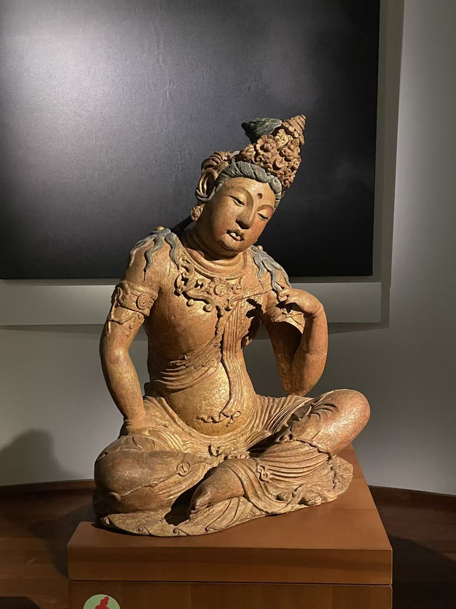

FURTHER LOOKING
延展看
另一些自在坐
一膝抬起的姿态，在不同的材料与年代里，形成了不同的体量与衣纹。这里从宾大木雕继续往后看；年代仍沿用每件作品的记录，石雕也可以与宋金木雕并处同一时代。
姿态之外，再看材料
4 件作品
仍是木雕，但更宽厚的体量与向前垂落的衣纹，适合另放一页慢慢比较。年代沿用馆方的金或元。
从木雕转向脱芯干漆：姿态依然舒展，纤细的手指与下垂的衣缘却由另一种结构支撑。

巴尔的摩 · 沃尔特斯艺术博物馆02
观音菩萨坐像
Bodhisattva Guanyin
- 年代
- 14世纪末—15世纪，明
- 材质
- 夹纻干漆，填料漆层、金与彩绘（馆方材料栏：bulked lacquer）
- 编号
- 25.256
金色面庞与暗红衣裙相映，手指与长袖形成流畅的曲线。
作品札记与资料
馆方说明，这尊像以浸漆织物包覆泥芯，硬化后脱去内芯，连纤细的手指也是中空的；X光检查还发现内壁有含朱砂的颜料。它经巴黎卢芹斋公司之手，由多丽丝·杜克于1937年10月7日购得，2006年由其慈善基金会捐赠沃尔特斯。
馆方材料栏记作 bulked lacquer，工艺说明则描述了浸漆织物脱芯的中空结构。
基本信息据现场展签整理；照片 © Merton。
同在宋金的年代范围，这尊以石灰岩刻成。石面、手臂与岩座的连接，提供了材料之间的对照。


巴黎 · 吉美亚洲艺术博物馆03
观音菩萨坐像
Le bodhisattva Avalokiteshvara (chinois : Guanyin) assis
- 年代
- 宋或金
- 材质
- 石灰岩，残存彩绘
- 编号
- 未辨清
倾斜的头部、微抬的左膝和靠近面颊的手，形成与其他自在坐像不同的节奏。
作品札记与资料
这尊石灰岩菩萨与木雕坐像姿态相近，石面上的衣褶与木雕的转折可以对照着看。
藏品编号尚未辨清。
基本信息据现场展签整理；照片 © Merton。
木芯、泥层与金漆叠在一起；表层材料的检测年代与原像年代需要分别理解。